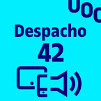

Despacho 42: Inteligencia artificial y arte con Andrés Burbano
En el episodio de 23 de febrero del podcast Despacho 42, César Córcoles y Susanna Tesconi, profesores de los Estudios de Informática, Multimedia y Telecomunicaciones de la UOC, conversan sobre IA y arte con Andrés Burbano, profesor de los estudios de Artes y Humanidades de la UOC.
Cinco reflexiones sobre el impacto de la inteligencia artificial en el mundo del arte
En el marco de este episodio del podcast Despacho 42, el profesor Andrés Burbano reflexiona sobre varios aspectos relacionados con la inteligencia artificial y el mundo del arte. A continuación recopilamos algunas de las reflexiones más interesantes del episodio.
1. Alan Turing ya se preguntó si las máquinas podían pensar a principios del siglo XX
Andrés Burbano asegura que la inteligencia artificial tiene un origen muy claro a nivel histórico en el siglo XX
.
Cuando Turing terminaba el trabajo de formalización matemática que dio lugar a la teoría de la computación y que contribuyó
a la implementación de los computadores en la década de los años 50, ya se preguntó si era posible que las máquinas pensaran.
A partir de aquí, planteó una serie de aplicaciones que a largo plazo podría tener este mundo computacional
, relata Burbano.
Poco tiempo después se desarrolló una conferencia con varias personas que empezaron a darle forma a los diferentes
componentes de la inteligencia artificial: el lenguaje natural, los lenguajes de programación o los programas de
inteligencia artificial. Estas personas intentaron responder a estas preguntas e implementar algunas soluciones,
pero vieron que no podían comprobar su funcionamiento porque el hardware era muy lento y tenía unas capacidades muy limitadas
,
destaca Burbano. Y añade: No ha sido hasta hace relativamente poco, gracias a las evoluciones en hardware y a
que el software se ha vuelto más accesible tanto para los expertos y expertas que desarrollan herramientas y otro
tipo de usuarios, que estas ideas y soluciones han podido ser una realidad
.
Burbano destaca que aunque parezca una obviedad, la inteligencia artificial no es un asunto nuevo
, ya que hoy
en día hay muchos libros publicados sobre la historia de la inteligencia artificial, como
Art in the Age of Machine Learning de Sofian Audry o
The artist in the machine
de Arthur I. Miller
2. Estamos entrando en un nuevo régimen cultural de la imagen
Burbano asegura que no hay que confundir a artistas y activistas que están haciendo proyectos basados con
IA desde hace años con la aplicación sin criterio en muchos casos de las nuevas herramientas que
utilizan algoritmos de maquine learning para crear producciones audiovisuales
.
Esto no necesariamente es arte, pero nos anuncia que estamos entrando en un nuevo régimen cultural de la
imagen en el que muchas de las nociones que estaban presentes hasta ahora en nuestra realidad de la relación
con las imágenes se van a movilizar y se están movilizando a una escala sin precedentes
, añade.
En este sentido, Burbano destaca que Microsoft ha adquirido Dall·e, una de las herramientas más icónicas con
inteligencia artificial, para distribuirla en el nuevo paquete de Office. Esta forma de crear imágenes va a
substituir a estos viejos procesadores imágenes de Microsoft. Esta es una transición muy profunda que no sabemos
qué consecuencias va a tener. Aun así, estos problemas de cocreación con las máquinas son apenas embriones de las
discusiones que se darán más adelante a nivel sociológico. Lo mismo está pasando con el ChatGPT: estas herramientas
cambian el panorama económico y político de las grandes corporaciones
, relata el profesor.
3. La IA está generando enormes bases de datos de imágenes colectivas que circulan a través de los medios digitales contemporáneos
Las herramientas de IA capaces de crear imágenes a partir de textos están anunciando los albores de un nuevo régimen audiovisual
de lo cultural
. Este cambio es sumamente importante, conmovedor y por supuesto asusta porque, además de las diferencias en
la manera de producir imágenes, el sistema de circulación de los contenidos está cambiando y ya es muy distinto al del pasado
,
destaca Burbano.
En este sentido, el experto asegura que con el uso de estas tecnologías se están generando enormes cantidades de datos.
La creación de imágenes, basada en el procesamiento natural del lenguaje y el procesamiento de outputs con enormes
bases de datos de imágenes colectivas, está dando lugar a enormes bases de datos de imágenes colectivas
, relata.
4. La uniformidad es uno de los principales riesgos de la creación de imágenes mediante herramientas de IA
Hay quienes piensan que con el auge de estas herramientas el arte volverá a pasar por una de las etapas de historia
del arte de reproducir técnicamente imágenes existentes, dando lugar a una posible pérdida de la diversidad y complejidad
de las imágenes. La uniformidad de las imágenes es, sin duda, uno de los riesgos que se puede generar cuando se alimentan
este tipo de bases de datos basadas en los procesos de aprendizaje con un tipo de imagen, incluso cuando es aparentemente
variado. Ante este contexto de amenaza de la diferencia en el mundo del arte, los artistas tenemos que ser los guardianes de
la distinción, entender cómo funciona el sistema e intentar darle un poco la vuelta
, asegura el profesor.
5. Debemos asumor los cambios con crítica, sin miedo y educando a las nuevas generaciones para que puedan trabajar con estas tecnologías
¿Qué deben hacer los artistas ante el auge de la inteligencia artificial para la producción de imágenes u obras de arte?
Burbano asegura que hay que asumir este tipo de retos con crítica y sin miedo
. No podemos trasladar el miedo al
cambio a las nuevas generaciones: a la hora de educar a las personas jóvenes tenemos que aprender también de ellas y
utilizar las herramientas que utilizan en su día a día para trasladarles los conocimientos. En este sentido, por ejemplo,
yo he llevado a cabo algunos experimentos trabajando con datos extraídos de sus propios perfiles de Facebook para que sean
capaces de analizar sus propios datos y sacar conclusiones
, concluye.
¿Qué es Despacho 42?
Despacho 42 es un podcast ideado y producido por los Estudios de Informática, Multimedia y Telecomunicación de la UOC sobre cómo las personas nos relacionamos con la tecnología. Esto nos llevará a hacernos preguntas sobre otras disciplinas como la filosofía, la ética, la economía o la salud, entre otras. El Despacho 42 es habitado por César Córcoles, Susanna Tesconi y Dani Riera. Y quiere ser un lugar para tod@s: para expertos (y no tan expertos) en tecnología, para toda la comunidad UOC, y también para aquella gente de fuera del ámbito, pero que sienta interés por ella.
Enlaces al episodio de 23 de febrero de 2023